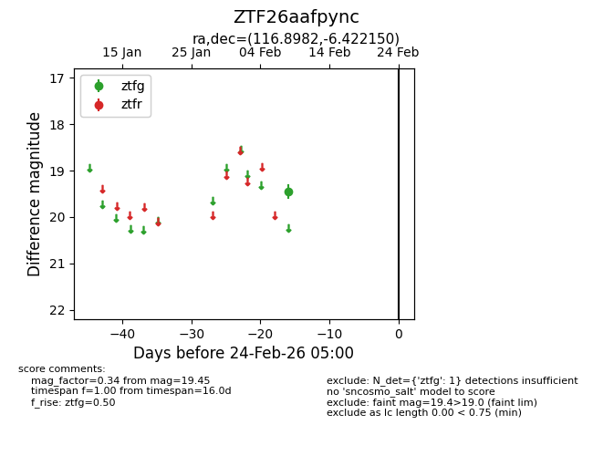
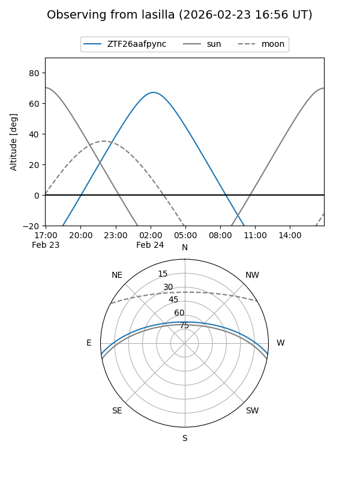
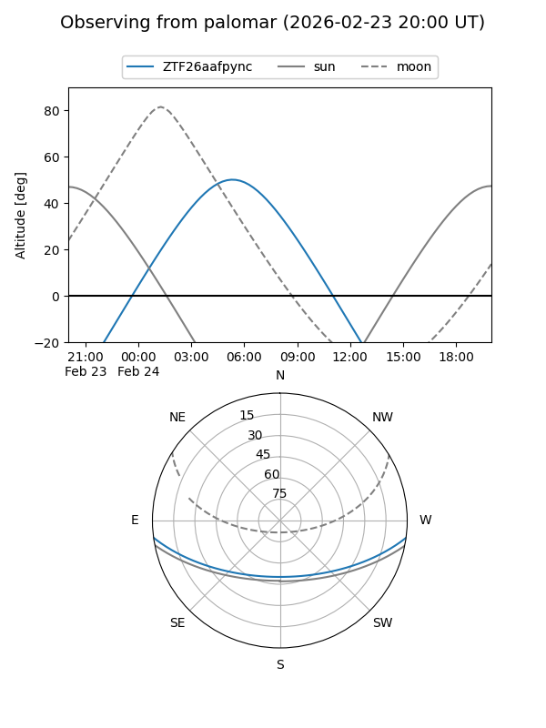

ZTF26aafpync
Target ZTF26aafpync at 2026-02-24 09:08
Aliases and brokers:
FINK: link
Lasair: link
ALeRCE: link
alt names
ZTF26aafpync (ztf,fink_ztf)
Coordinates:
equatorial (ra, dec) = 116.8982,-6.42215
equatorial (HMS+DMS) = 07:47:35.57,-06:25:19.74
galactic (l, b) = (225.1905,+9.41206)
Flags:
Photometry:
last ztfg=19.45
1 ztfg detections
Lightcurve

Visibility


Additional plots